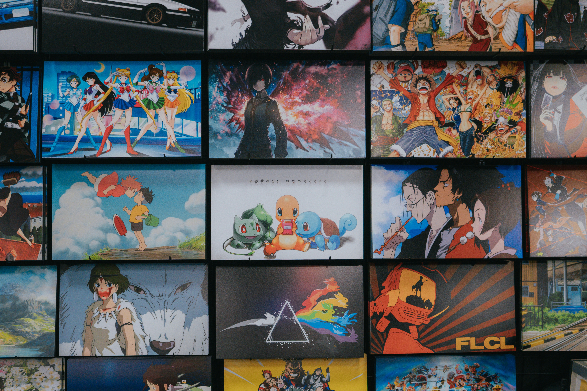
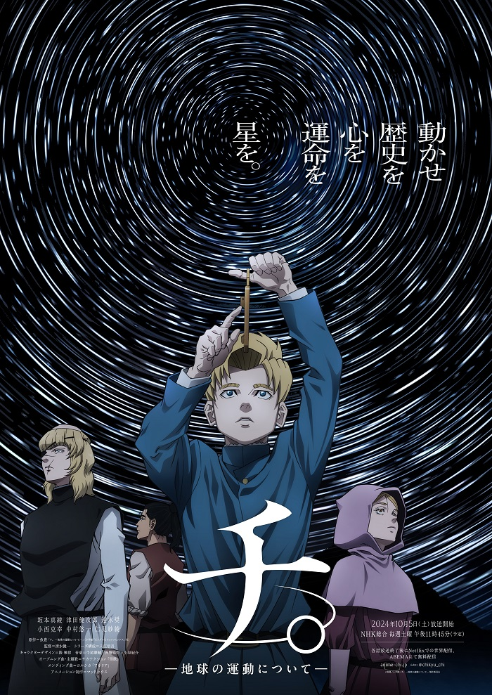
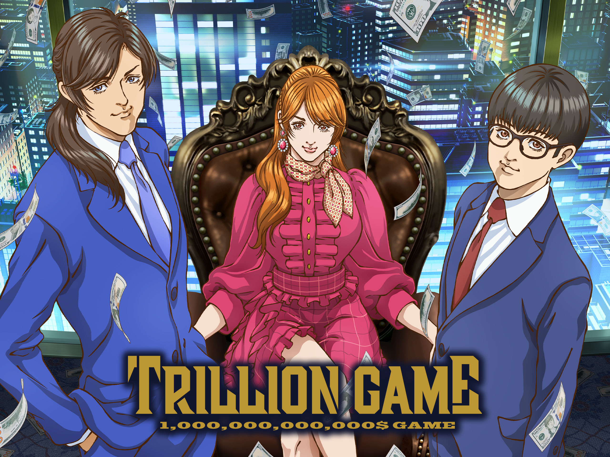

Anime You Probably Skipped

The seasonal anime carousel has a nasty habit of letting algorithms dictate our taste. Every time late summer wraps up in August and September and the massive Fall cour unleashes its tidal wave of premieres in October, social feeds turn into a monoculture. Everyone talks about the exact same multi-million-dollar shōnen sequels, the return of titan franchises, and whatever dark fantasy has the loudest marketing budget behind it.
There is nothing wrong with hyping up the blockbusters. But if you only follow the trending tab, you are routinely missing the sharpest writing, the boldest visual experiments, and the genuine creative standouts of the season.
While the crowd was distracted by the sheer volume of October noise, three real, distinct productions slipped through the cracks. If you're looking for shows that respect your time and take actual narrative risks, it’s time to update your watchlist.
1. Chi: Chikyuu no Undou ni Tsuite (Orb: On the Movements of the Earth)
- Studio: Madhouse
- Genre: Historical Drama / Intellectual Thriller
On paper, a historical drama set in 15th-century Europe about the perilous defense of the heliocentric theory sounds like required reading for a history seminar, not peak anime television. In execution, Madhouse delivered one of the most nail-biting ideological thrillers of the decade.
Set in an era where questioning geocentrism was branded high heresy punishable by torture and burning at the stake, Chi approaches astronomy not with dry academia, but with the visceral tension of Death Note. It treats the pursuit of truth as a contagious, dangerous obsession passed from one doomed scholar to the next. The stakes feel terrifyingly real, the atmosphere is suffocatingly oppressive, and the sheer intellectual defiance of its protagonists will make your heart race faster than any choreographed shōnen fight scene this season. It's Madhouse operating at the height of its prestige powers.
2. Trillion Game
- Studio: Madhouse
- Genre: High-Stakes Corporate Thriller / Mind Games
Adapted from the hit manga by Riichiro Inagaki (Dr. STONE, Eyeshield 21) and Riichi Ikegami (Crying Freeman), Trillion Game is the anti-isekai answer for anyone tired of teenage power fantasies.
The premise is ruthlessly straightforward: two polar-opposite high school classmates-Haru, a wildly charismatic, silver-tongued sociopath of a communicator, and Gaku, an awkward, brilliant tech savant - set out from zero to hustle, hack, and bluff their way to earning one trillion dollars, aiming to buy out the entire corporate landscape of Japan. It’s slick, relentlessly paced, and packed with sharp social commentary on modern startup culture, venture capital sharks, and the tech industry. If you miss the electric mind-games and predatory chess-matches of classic late-night anime, this is pure adrenaline.
3. Kimi wa Meido-sama (You Are Ms. Servant)
- Studio: Felix Film
- Genre: Slice of Life / Action / Emotional Recovery
October’s schedule was packed with absurdly long light-novel titles, leading many to dismiss this one as just another disposable seasonal rom-com. That’s a mistake.
The story follows Yuki, an emotionally stunted orphan raised from childhood as a lethal, weaponized assassin, who suddenly finds herself abandoned and seeking work as a normal domestic maid for an ordinary high schooler. Beneath the charming, fish-out-of-water comedy - where chopping vegetables requires the precise muscle memory of a throat-slit-lies a genuinely touching and beautifully understated story of desensitization, trauma, and learning how to exist as a human being. It balances snappy, surprisingly kinetic martial-arts bursts with quiet, emotionally grounded domestic storytelling that lingers long after the credits roll.

Verdict: Look Beyond the Front Page
Streaming services are engineered to funnel every subscriber into the top three trending shows. The problem isn’t that great television isn’t being made in Japan - it’s that deliberate, character-driven storytelling rarely produces eight-second viral clips on social media.
Step away from the mainstream highway this season. Whether you want the suffocating tension of intellectual heresy in Chi, the cutthroat startup warfare of Trillion Game, or the fragile emotional recovery of You Are Ms. Servant, these are the series proving that the medium's creative spark is still very much alive.
Over to you: Which of these made it onto your queue, and which one are you bumping up the list tonight? Drop your impressions in the comments below!
Disclaimer & Copyright Notice: All images, promotional materials, and screenshots featured in this article are the property of their respective production committees, studios, and original creators (including Madhouse, Felix Film, and associated licensors). They are used here strictly under the principles of Fair Use (and statutory quotation rights) for non-commercial editorial commentary, criticism, and review purposes. No copyright infringement is intended.